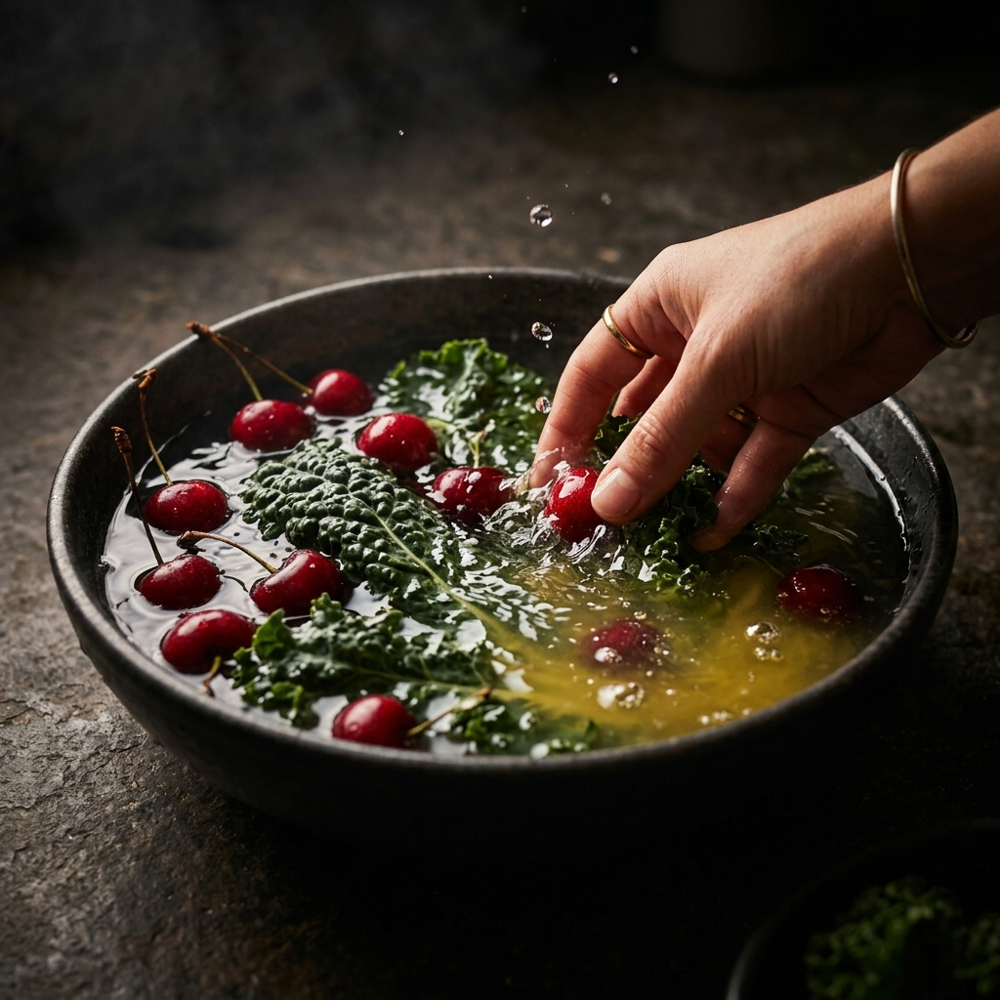
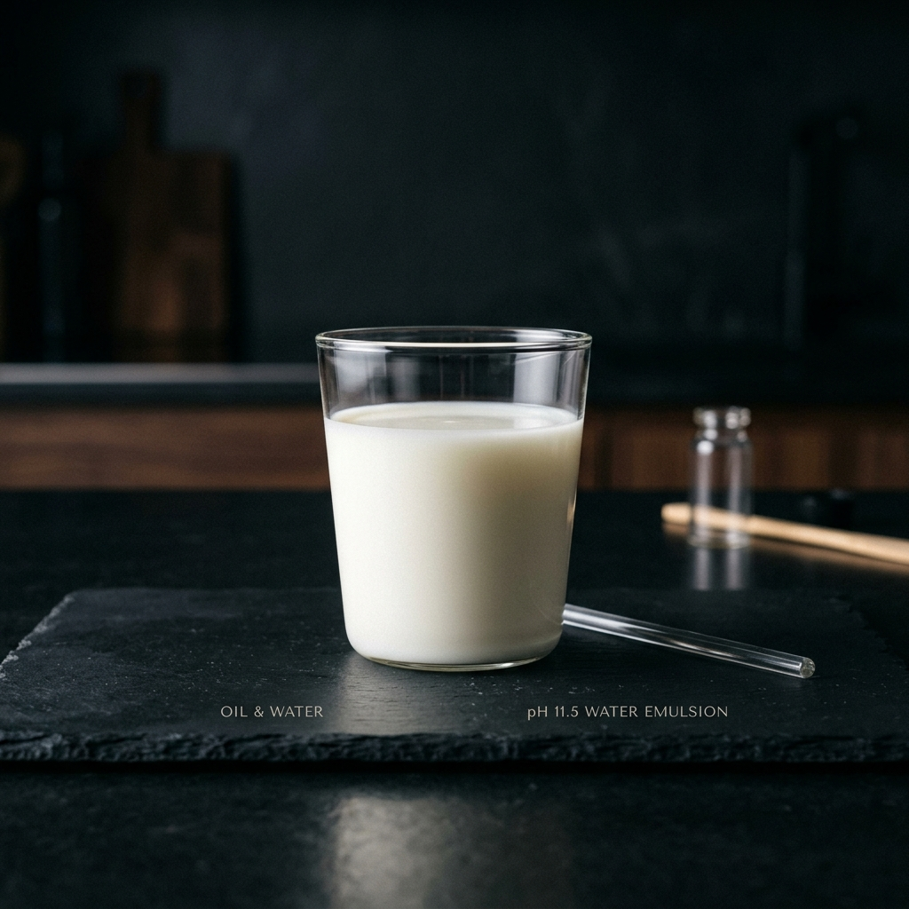

Una de nuestras "estrellas". La capacidad de disolver lo indísoluble: desde pesticidas residuales hasta la grasa más difícil de tu hogar. One of our "stars". The ability to dissolve the indissoluble: from residual pesticides to the toughest grease in your home.
La mayoría de las frutas y verduras de supermercado están tratadas con pesticidas liposolubles (base de aceite) y ceras para que resistan la lluvia y el riego. El agua corriente no puede eliminarlos. Most supermarket fruits and vegetables are treated with oil-based pesticides and waxes so they can withstand rain and irrigation. Regular tap water cannot remove them.
El pH 11.5 es capaz de hacer lo increíble: desprender estos residuos tóxicos, permitiendo que tu comida recupere el sabor y la calidad de la agricultura ecológica. pH 11.5 is capable of doing the incredible: detaching these toxic residues, allowing your food to recover the flavor and quality of organic farming.
"Sorprende ver el color amarillento que adquiere el agua tras unos minutos; es la prueba física de la limpieza profunda." "It's surprising to see the yellowish tint the water acquires after a few minutes; it's physical proof of deep cleaning."

En este tipo de agua, el aceite tiende a fusionarse con el líquido. Esta propiedad emulsionante es lo que permite desintegrar las grasas y los productos químicos que de otro modo serían imposibles de limpiar solo con agua. In this type of water, oil tends to fuse with the liquid. This emulsifying property is what allows it to disintegrate fats and chemicals that would otherwise be impossible to clean with water alone.
Breaking surface tension.
Industrial cleaning power.
Literalmente podríamos prescindir de la mayoría de los productos de limpieza químicos que compramos. Lavar suelos, encimeras y cristales con pH 11.5 ofrece resultados superiores, es biodegradable y protege la salud de tu familia al eliminar los vapores irritantes de los detergentes industriales. We could literally do without most of the chemical cleaning products we buy. Washing floors, countertops, and windows with pH 11.5 offers superior results, is biodegradable, and protects your family's health by eliminating irritating fumes from industrial detergents.
"Úsalo para quitar manchas de ropa, limpiar la campana de la cocina o incluso como desmaquillante profundo de base oleosa." "Use it to remove stains from clothes, clean the kitchen range hood, or even as a deep oil-based makeup remover."